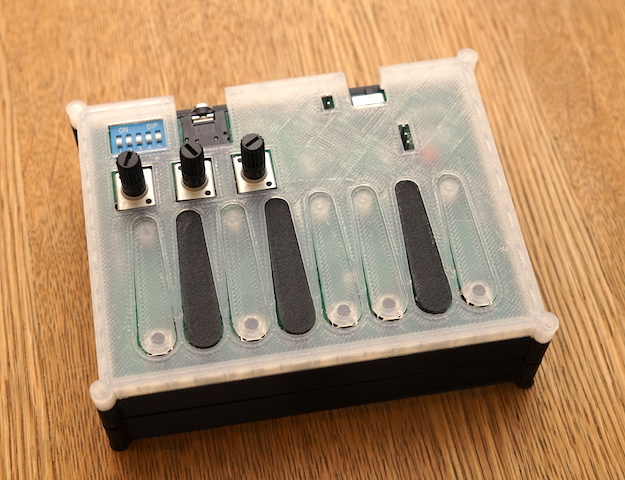
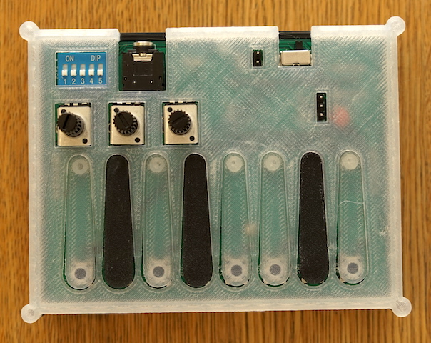
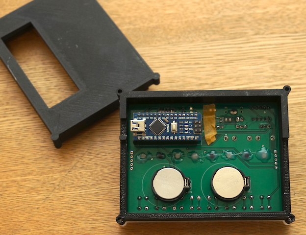

ポケットシンセ

dspsynth.euというサイトに載っていた、Arduino単体で音を生成・出力するシンセ。
記事を見つけた当時は3Dプリンタを持っておらず、それでも作りたくて、安いおもちゃのキーボードを分解・改造して実装した（が、実装が下手くそで動作が安定しなかったため、少し前に結局捨ててしまった…）。
その後、3Dプリンタを入手したこと、更にはKiCadという基板設計ツールを使い始めたことから、
手のひらサイズのシンセサイザーを作るのにちょうど良いのでは？と思って、作ってみた。
見た目はすごくかわいい仕上がりになったので満足なのだけど、ポケットシンセ…というほど小型ではない（ポケットには入らない）のは反省点。
ちなみに、音源部分は実質パクリなのだけど、少しだけ本家にはない機能を追加している。
つまみ３つとキー８個しかないので、演奏が難しい。そのため、オクターブシフト機能を追加した。
また、スケールを変えられるようにした。ペンタスケールを選ぶことで、それっぽい演奏が簡単にできるようになった。
（演奏例）
それでも、やっぱり実用性を考えると難しいなと思う。今後の課題は、
- シーケンサの制作（手弾きせず演奏するインタフェースの開発）
- ミキサーの製作（複数の音源の音をミックスする）
- スピーカ搭載
以下にArduinoのプログラム、ケースの3Dデータ、回路と基板の設計データがあります。
- moppii-hub/pocketStrSynth（Github）


先週末ステッピングモータで作った回転台座、最初はカクカクしてたけどハーフステッピングに変えたらスムーズになった。またガンプラを塗装したい欲求沸いてきて、良き。 pic.twitter.com/OAsGwID8cz
— moppii (@moppii2020) June 23, 2020